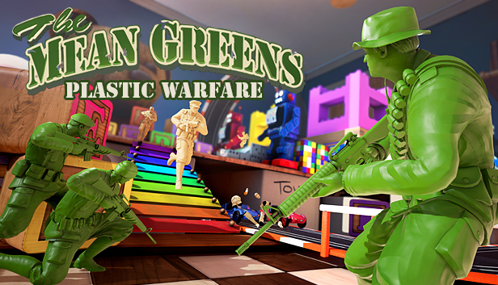

Mortals and Monsters to gra przeglądarkowa, w której gracze wcielają się w postaci śmiertelników lub potworów i walczą ze sobą na różnych arenach. Gracze mogą wybierać spośród wielu różnych postaci, każda z unikalnymi umiejętnościami i atakami. Gra jest dynamiczna i pełna akcji, a także oferuje wiele różnych trybów rozgrywki, takich jak deathmatch, zabójstwa i kontrola strefy.

Plastic Warfare
Plastic Warfare to gra sieciowa z gatunku FPS, w której gracze walczą ze sobą w różnych trybach rozgrywki, takich jak deathmatch, zabójstwa i tryb wyścigu. Gracze mają do dyspozycji szeroką gamę broni i gadżetów, a także możliwość personalizacji swoich postaci. Gra jest pełna akcji i nieprzewidywalnych zwrotów akcji, a także oferuje wiele różnych map i trybów gry.
Dark Deceptions
Dark Deceptions to gra przygodowa z gatunku horror, w której gracze wcielają się w postać dziecka uwięzionego w labiryncie pełnym potworów i pułapek. Gracze muszą uważać na swoje otoczenie, unikać niebezpieczeństw i rozwiązywać zagadki, aby przejść przez każdy poziom i uwolnić się z labiryntu. Gra jest pełna niepokojących i przerażających momentów, a także oferuje wiele różnych opcji i poziomów trudności, dzięki czemu każdy gracz może dostosować grę do swoich potrzeb i preferencji.
Plants vs Zombies: Battle for Neighborville
Plants vs Zombies: Battle for Neighborville to gra akcji z gatunku tower defense, w której gracze wcielają się w rośliny lub zombie i walczą ze sobą na różnych polach bitew. Gracze mają do dyspozycji szeroką gamę roślin i zombie, a także możliwość personalizacji swoich postaci. Gra oferuje wiele różnych trybów rozgrywki, takich jak deathmatch, kooperacja i tryb wyzwań, a także dynamiczne i pełne akcji walki.
O mnie
Nazywam się Antek i jestem wielkim miłośnikiem gier. Chętnie kupuję gry dla znajomych i zapraszam ich do wspólnej rozgrywki, nawet jeśli odmówią to im każe ze sobą grać. Moim ulubionym typem gry jest FPS, ale uwielbiam także gry z gatunku horror i tower defense. Poza graniem, jestem bardzo dobry generałem.